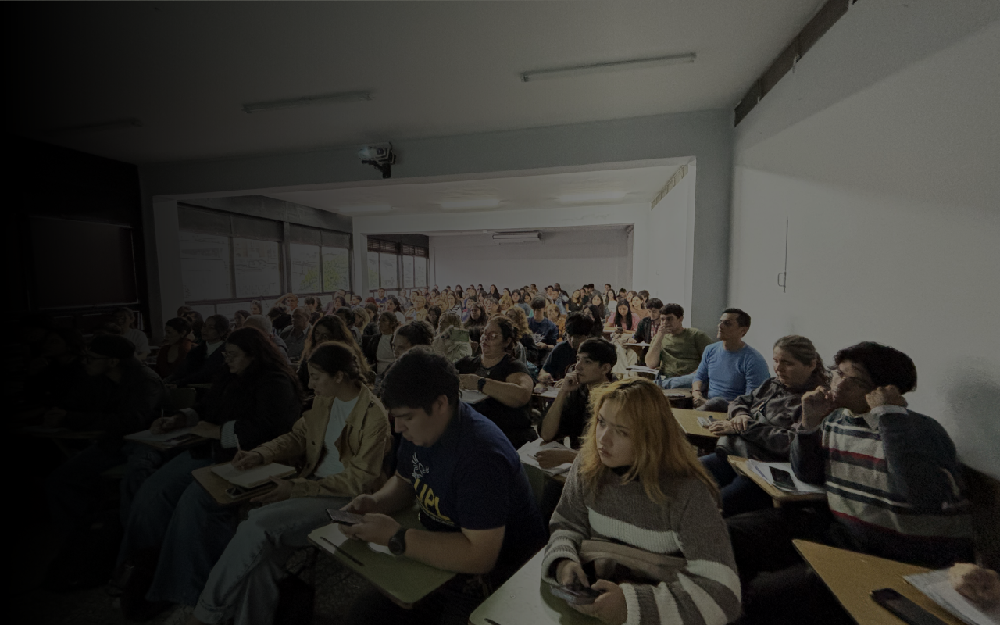
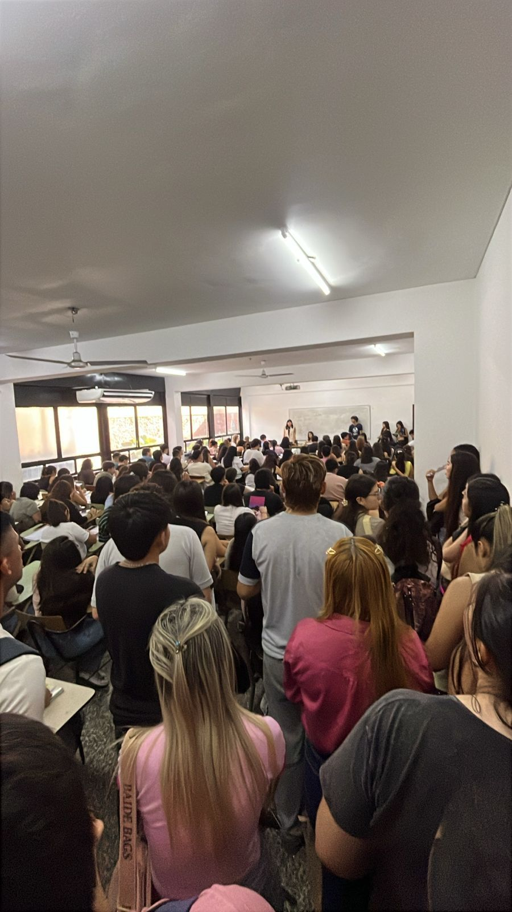
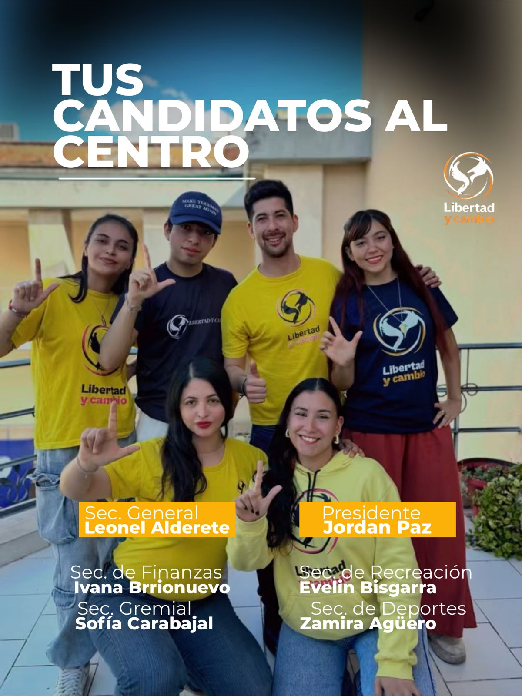
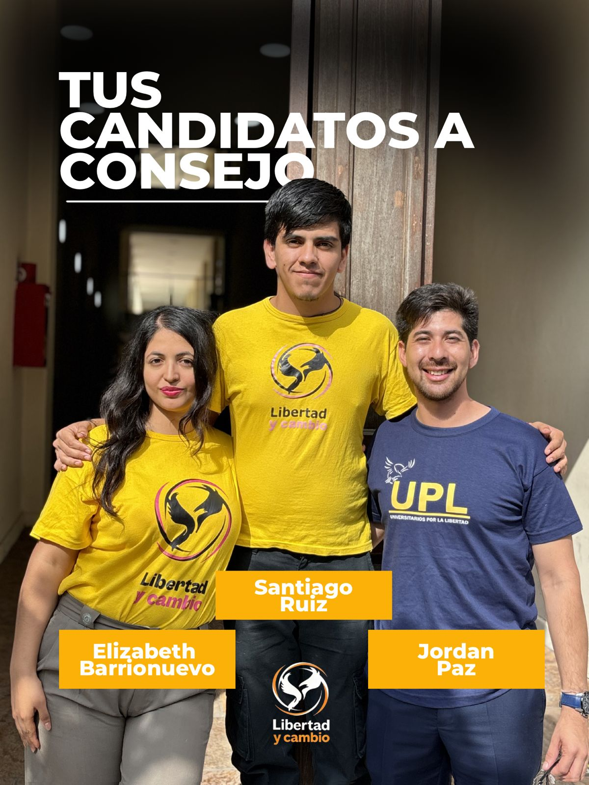
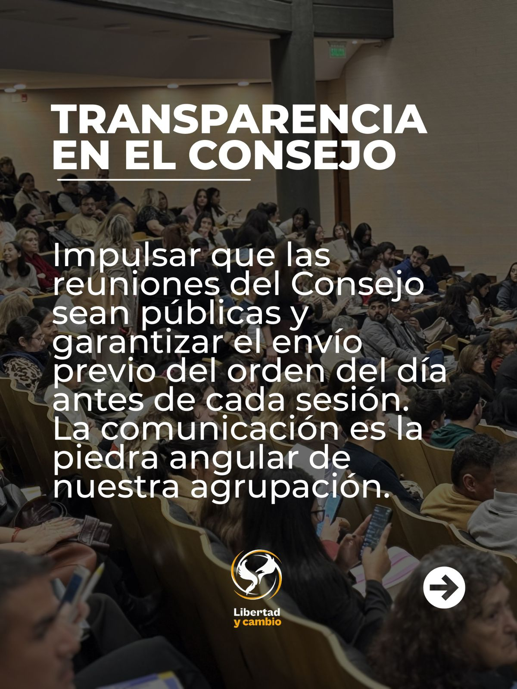
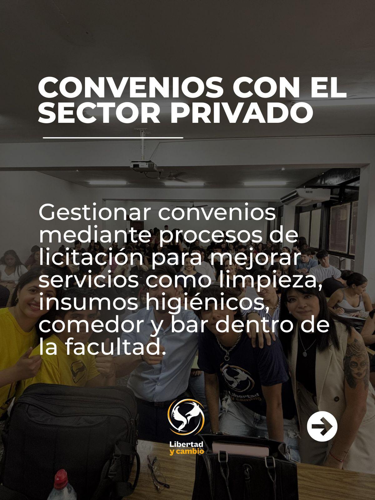
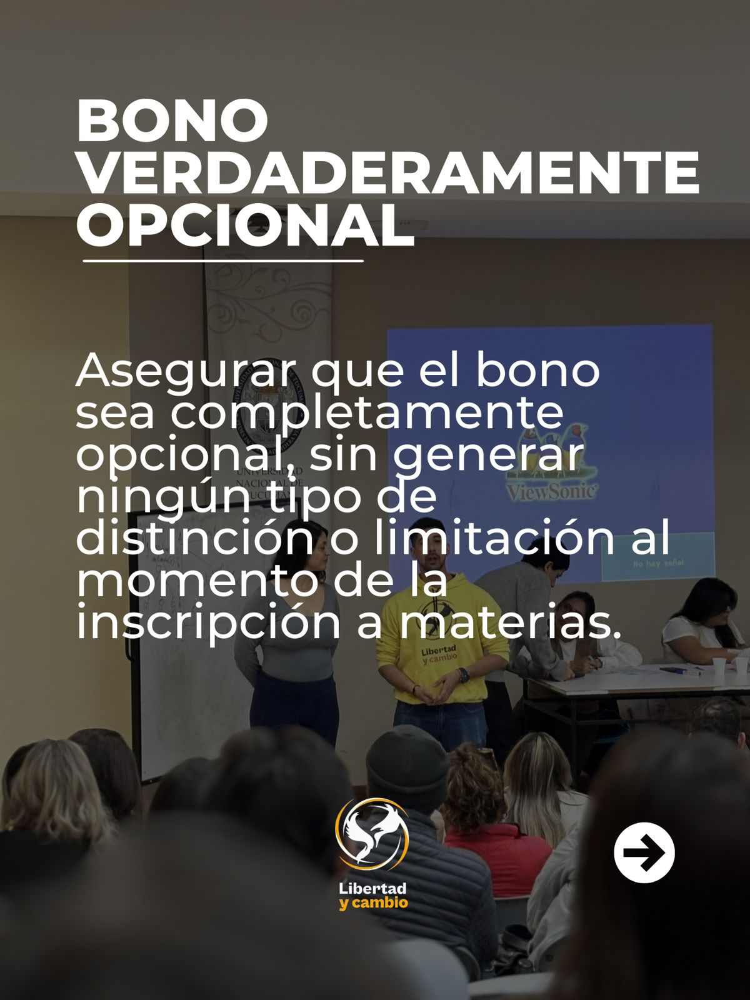
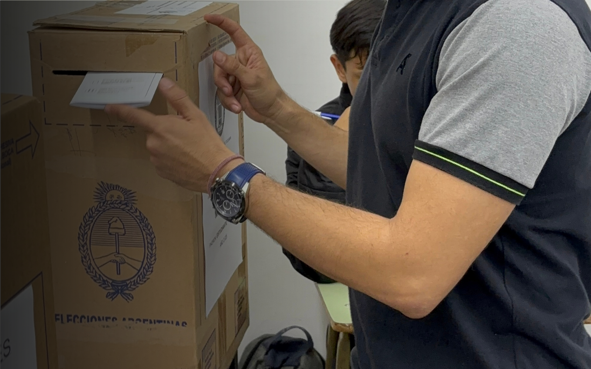
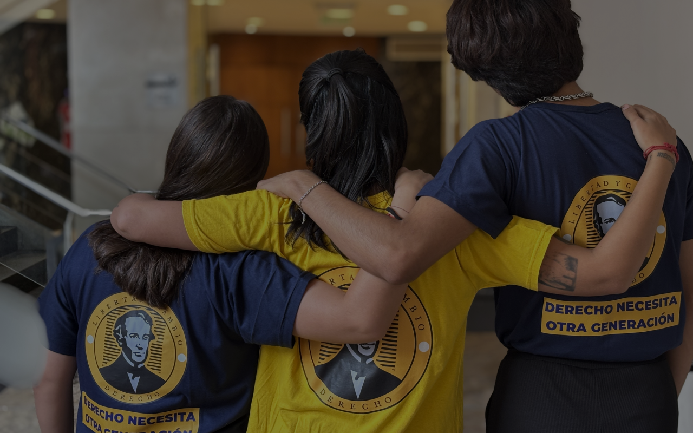
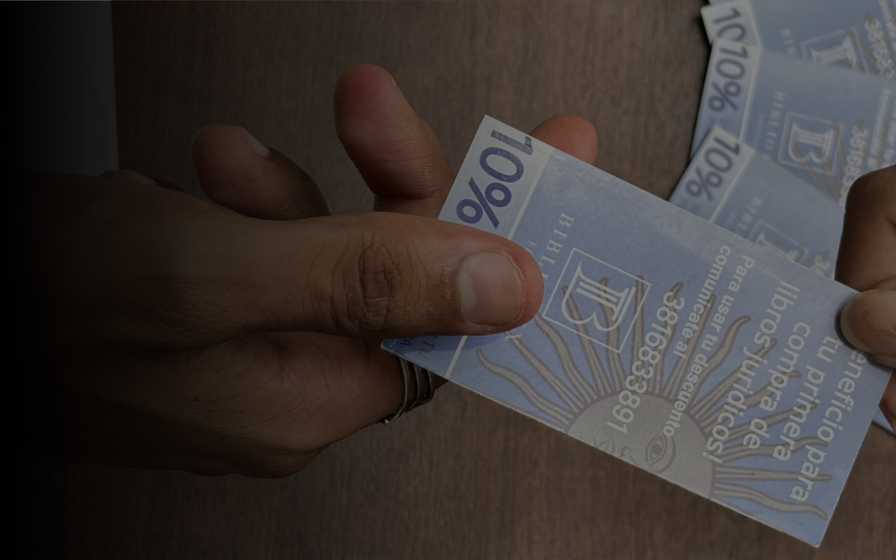

Quienes somos
Libertad
y cambio
Somos una nueva generación de estudiantes que creen en las ideas de la libertad. Estamos en la facultad para ayudarte.
ConocenosNosotros nacimos por el hartazgo de ver siempre a los mismos en la UNT haciendo la vieja política de siempre, que no resuelve nada y encima es cero transparente. Vinimos a modernizar eso.
Laburamos en dos frentes: por un lado, la "batalla cultural", donde armamos charlas, convenios con empresas y nos plantamos en debates fuertes, como cuando nos opusimos a las tomas. Y por otro, la militancia del día a día, que es dar una mano en los grupos de WhatsApp, estar en las mesas libres o en los ingresos en 25 de Mayo o la Quinta.
Lo mejor es que el tiempo lo manejás vos según tus clases; te ponés la remera cuando podés y ayudás desde donde te quede cómodo.

Charlas, clases y encuentros pensados para acompañarte durante la cursada. El contador de charlas lo agregamos cuando me pases el diseño.


Más espacios para estudiar. Mesas más justas para rendir. Una Facultad que acompañe. Este 6 de mayo, Libertad y Cambio.





Trabajamos para acercarte beneficios concretos: descuentos en fotocopias, acceso a material de estudio y oportunidades de formación.
Descuentos y herramientas para que estudiar sea un poco más accesible.
Acceso a recursos útiles para cursar, preparar parciales y organizar la carrera.
Actividades, eventos y oportunidades para seguir aprendiendo dentro de la facultad.
Accesos rápidos para consultar la biblioteca, el lugar de votación y las novedades importantes de Libertad y Cambio.

La página está pensada para funcionar bien desde el celular y poder instalarse como app.

Consultá tu mesa, aula y sede de votación desde la página preparada para futuras elecciones.

El equipo puede cargar materiales por materia, optativa o recurso desde el panel de administración.